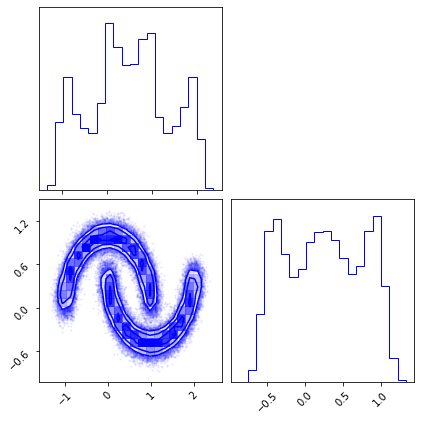
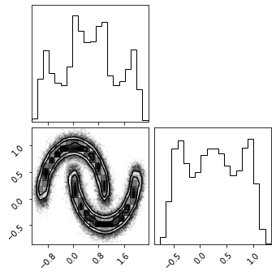
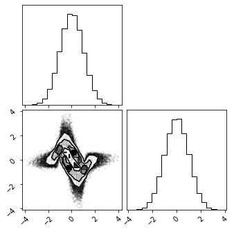
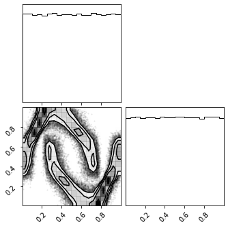
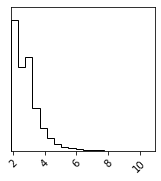
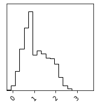
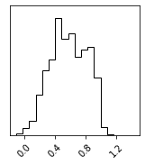
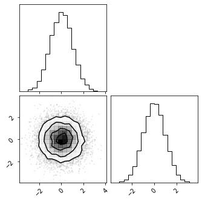
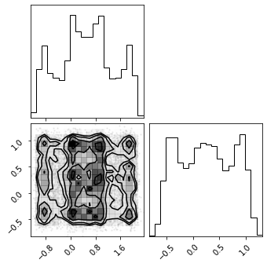

1.2 - Marginal Gaussianization#
import sys, os
from pyprojroot import here
# spyder up to find the root
root = here(project_files=[".here"])
# append to path
sys.path.append(str(root))
%load_ext autoreload
%autoreload 2
Import Packages#
from typing import Union
import numpy as np
from sklearn.datasets import make_moons
from scipy import stats
# Packages
import numpy as np
import pytorch_lightning as pl
# Plot
import matplotlib.pyplot as plt
import corner
import wandb
pl.seed_everything(1234)
%load_ext autoreload
%autoreload 2
Global seed set to 1234
The autoreload extension is already loaded. To reload it, use:
%reload_ext autoreload
Logging#
# TODO
Data#
ntrain = 100_000
ntest = 10_000
noise = 0.1
random_state = 123
train_data = make_moons(n_samples=ntrain, noise=noise, random_state=random_state)[0]
test_data = make_moons(n_samples=ntest, noise=noise, random_state=random_state*10)[0]
Plot Data#
fig = plt.figure(figsize=(7, 7))
corner.corner(train_data, color="blue", fig=fig)
plt.show()

Flow Transformation#
class Bijector:
def forward(self, X):
raise NotImplemented
def inverse(self, X):
raise NotImplemented
def gradient(self, X):
raise NotImplemented
Marginal Gaussianization#
Marginal Uniformization#
class MarginalHistogramUniformization:
def __init__(self, X: np.ndarray, bins: Union[int,str]="auto", alpha: float=1e-10, bound_ext: float=0.1):
estimators = []
for iX in X.T:
diff = iX.max() - iX.min()
lower_bound = iX.min() - bound_ext * diff
upper_bound = iX.max() + bound_ext * diff
# create histogram
hist = np.histogram(iX, bins=bins, range=(lower_bound, upper_bound))
# create histogram object
i_estimator = stats.rv_histogram(hist)
# add some regularization
i_estimator._hpdf += alpha
estimators.append(i_estimator)
self.estimators = estimators
def forward(self, X):
Z = np.zeros_like(X)
for idim, iX in enumerate(X.T):
Z[:, idim] = self.estimators[idim].cdf(iX)
return Z
def inverse(self, Z):
X = np.zeros_like(Z)
for idim, iZ in enumerate(Z.T):
X[:, idim] = self.estimators[idim].ppf(iZ)
return X
def gradient(self, X):
X_grad = np.zeros_like(X)
for idim, iX in enumerate(X.T):
X_grad[:, idim] = self.estimators[idim].pdf(iX)
return X_grad
fig = corner.corner(train_data)

from rbig._src.uniform import MarginalHistogramUniformization
marg_hist_bijector = MarginalHistogramUniformization(X=train_data)
X_u = marg_hist_bijector.forward(train_data)
fig = corner.corner(X_u)
Inverse Transforms#
X_approx = marg_hist_bijector.inverse(X_u)
fig = corner.corner(X_approx)
Inverse Gaussian CDF#
from rbig._src.invcdf import InverseGaussCDF
invcdf = InverseGaussCDF(eps=1e-5)
Forward#
X_g = invcdf.forward(X_u)
fig = corner.corner(X_g)

Inverse#
X_u_approx = invcdf.inverse(X_g)
fig = corner.corner(X_u_approx)

Jacobian#
X_g_grad = invcdf.gradient(X_u)
fig = corner.corner(X_g_grad)

Composing Transfirmations#
from rbig._src.base import CompositeBijector
bijectors = [marg_hist_bijector, invcdf]
marg_gauss_bijector = CompositeBijector(bijectors)
X_g = marg_gauss_bijector.forward(train_data)
fig = corner.corner(X_g)
X_approx = marg_gauss_bijector.inverse(X_g)
fig = corner.corner(X_approx)
Jacobian#
X_ldj = marg_gauss_bijector.gradient(train_data)
fig = corner.corner(X_ldj)

Density Estimation#
# 1) latent prob
Xg = marg_gauss_bijector.forward(train_data)
# latent probability
base_dist = stats.norm(loc=0, scale=1)
pz = base_dist.pdf(Xg).sum(axis=1)
# 2) prob
X_detjacobian = marg_gauss_bijector.gradient(train_data)
# total prob
p_x = pz * X_detjacobian
fig = corner.corner(p_x)

Sampling#
# 1) samples from latent probability
base_dist = stats.norm(loc=0, scale=1)
pz_samples = np.vstack([base_dist.rvs(size=10_000, random_state=123), base_dist.rvs(size=10_000, random_state=42)]).T
fig = corner.corner(pz_samples)

X_samples = marg_gauss_bijector.inverse(pz_samples)
fig = corner.corner(X_samples)
